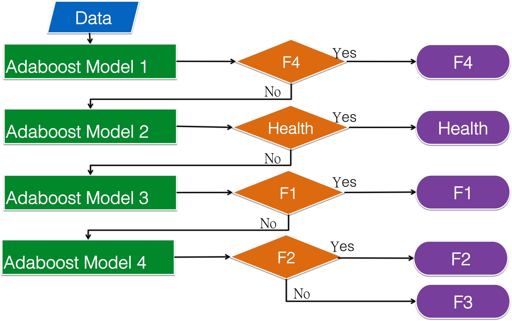

Kui-Ming Chen
SUMMARY OF EXPERIENCES
Familiar with R and Git, and always trying to leverage R to solve problems both in life and work. Have analyzed data of medical image, microarray, EEG and stock. Devoted web scraping data of stock, future and option. Have exprience querying SQL and building product with machine learning. Gave several talks about visualization, ETL, and machine learning with R language.
Highly skilled at communication and relationship-building with clients. Used to work on cross-organizational cooperation. Ability to organize a team to set up a production lines.
WORK EXPERIENCES
General Biologicals Corporation
Hsinchu, Taiwan
Aug. 2013-Present
-
Plant operation in Kaohsiung Science Park.
Built and maintained quality management system in compliance with requirement for Medical Device Good Manufacture Practice (GMP).
Established quality management documents for ELISA Reader production.
Built production lines for HBV PCR and Platelet-Rich Plasma (PRP) relevant products.
Responsible for development, production, quality control and sales of PRP products.
Responsible for maintaining relationship with customer of PRP, and revenue will be increased 10 millions in a year.
-
Made a new model for liver fibrosis prediction, and increased 50% accuracy compared with old model.
- Data set: concentration of 3 biomarkers in serum and fibrosis stages (F0, F1, F2, F3 and F4) of 600 samples.
- Target: classification of liver fibrosis stage by 3 biomarkers.
- Algorithm: Adaboost.
- Method:
- Made the first adaboost model with training data which is 80% of samples labeled as "F4" and "non-F4".
- Made the second adaboost model with training data which is 80% of samples labeled as "F0" and "non-F0".
- Made the third adaboost model only with the data whose fibrosis stage were F1~F3, and re-labled as "F1" and "non-F1".
- Made the 4th adaboost model which only can distinguish F2 and F3.
- Classified samples with 3 biomarkers by models mentioned above in sequence from the first one to the 4th one. 
- Validation
- Leave-one-out-cross-validation.
- Bootstrap
- Marketing researched and provided strategy for oral spray and cosmetic products.
木刻思股份有限公司
Taipei, Taiwan
Jul. 2015- Present
- Curriculum planning.
- Budgeted for courses.
- Prepared syllabus.
- Controlled timing of activities during courses.
- Recruited teachers and tutors.
- Establish procedure for giving courses.
- Market survey.
- Wrote copywriting.
- Planned and executed timing of advertising and propagandizing.
- Acted as tutor.
- List of attended courses:
- R Crawler 101
- Pycawler 101- Crawler with Python
- 玩轉交易 (Be a Trade"R")！
- Datacamp: 2016「資料科學首部曲－數據甦醒」
- RESTful 淺談和 基礎 HTTP
- Backend 基礎課程（201604）課程報名
- R Basic for Crawler 101
- Series of courses with Taipei Computer Association (Will start on August 2016)
- R 資料處理 ETL 實戰
- 視覺化心法與R語言實戰工作坊
- Deep Learning
- Git 101 (Was not launched)
- Teaching
- Course name: R Crawler 101
- In this course, students can learn how to observe website and scrap data from internet with R language.
- Gave the first lecture of this course which introduce website observation methods with browser and some extensions.
- http://datasci.kktix.cc/events/rcrawler101-201605
- Course name: R Crawler 101
- Completed the project of web crawler which collects news from the website for Institute of Sociology, Academia Sinica
- Language: R
- Target website: http://udndata.com/library/
- Mission:
- Collect news from UDN website
- Extract information of authors, titles, articles and source of news.
- Transform information into tables.
- Make a function to implement mentioned above.
- Assisted in operation of company
NanoRay Biotech
New Taipei City, Taiwan
Oct. 2009- Aug. 2013
Formulated inspection methods and research plants.
-
Image processing and data analysis.
- Analyzed correlation between quality of images and spectra of different metal target.
- Made a GUI for calculating focal spot size of x-ray tube:
- Language: Matlab
- Function:
- Load image file of tungsten ball.
- Detect edge and center of ball image.
- Calculate focal spot size with penumbra distance and diameter of ball image.
Managed routine testing schedule.
Factory management
Documentation for ISO 13485 and ISO 9001.
Provided after-sales service to customers including installation, maintenance, repair, hotline response, and initiating operator trainings.
-
Senior radiation protection personnel.
Detected radiation, and wrote radiation safety detection and assessment report.
Applied permit of sales, production and operation.
Education of radiation protection.
Designed radiation protection shielding
Communicated with Atomic Energy Council
TEACHING/SPEECH EXPERIENCES
All the lectures and speeches are about R language.
-
Speeches
- In August 2013, the first speech about investment with R in COSCUP.
- Subject: 從R開始玩股票
- Content: introduction risk estimation and control of stock investment.
- http://www.slideshare.net/KuiMingChen/r-stock
- For promotion of R language
- Date: November 2013, January 2014 and April 2014.
- Organizer: Taiwan R user Group and Open Source Software Foundry.
- Location: National Chung Hsing University, SINICA, and National Cheng Kung University
- Subject: Visualization with R
- Content: introduction visualization tools in R including graphics, ggplot2, googleVis, rCharts and shiny, and examples of data visualization.
- In May 2015, a speech for promoting R in National Defense Medical Center.
- Subject: Explore the world with R
- Content: introduction benefit of R, especially in exploratory data analysis.
- http://kuiming.github.io/explore-world-with-R/index.html
- In August 2015, a lightening talk about combination of R and Echarts.
- Organizer: Data Science in Taiwan Conference.
- Co-organizer: Taiwan R user Group.
- Subject: Visualization with recharts.
- Content: Introduction of recharts package which is combination of R and Echarts (Javascript charting library).
- http://kuiming.github.io/lightening_recharts/recharts.html
- In August 2013, the first speech about investment with R in COSCUP.
- Lectures
- In August 2014, a lecture of basic visualization with R
- Organizer: Data Science in Taiwan Conference.
- Co-organizer: Taiwan R user Group.
- Subject: R Basic Visualization.
- Content: introduction of graphics package in R.
- https://github.com/KuiMing/graphics
- During 30 June to 3rd July 2015, a data science summer camp.
- Organizer: DSP, and National Chengchi University.
- Subjects: "Exploratory Data Analysis" and "EDA with R"
- Content: introduction of EDA and skills of EDA with R.
- https://dsp.im/data-camp-nccu-summer-2015/
- In August 2015, a lecture of visualization with R.
- Organizer: Data Science in Taiwan Conference.
- Co-organizer: Taiwan R user Group.
- Subject: R Visualization.
- Content: introduction of ggplot2 package in R.
- http://everdark.github.io/ggplot2_lecture_dsc2015
- In December 2015, a lecture of exploratory data analysis with R.
- Organizer: DSP.
- Subject: "EDA with R" and "ETL with R"
- Content: introduction of ggplot2 and dplyr packages in R.
- https://dsp.im/events/data-thinking-team-training/
- In May 2016, a lecture of Web Crawler with R.
- Organizer: 木刻思股份有限公司
- Subject: Week1- Mimic Your Browser !
- Content: introduction of website observation methods with browser and some extensions.
- http://datasci.kktix.cc/events/rcrawler101-201605
- In August 2014, a lecture of basic visualization with R
SKILLS
- Programing language
- R
- Python
- Matlab
- Operating System
- Unix
- Linux
- Version control
- Git
Data extract, transform and load
Data analysis
Data mining
Machine learning
Image processing
EDUCATIONS
| Duration | University | Department |
|---|---|---|
| 2006/08~2008/08 | National Yang-Ming University | Institute of Biomedical Informatics |
| 2002/08~2006/06 | National Yang-Ming University | Medical Radiation Technology |
Thesis
- Effects of Age on EEG Activity during Driving
- Analysis method: independent component analysis and time-frequency analysis.
- Results:
- Alpha-band power of parietal and occipital lobes was augmented during drowsiness.
- Theta-band power of parietal and occipital lobes increased with age.
PROFESSIONAL LICENSES
- Senior Radiation Protection Personnel Licence
- Medical radiation technologist Licence